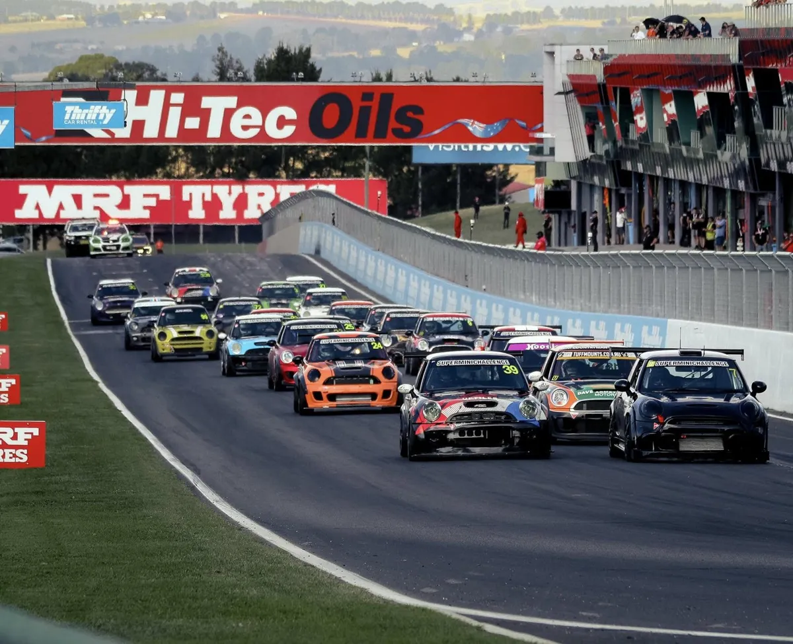

Josh Mills beats Trent Spencer and Zane Goddard to take the round and the championship lead; Jim Campbell wins Unlimited.

STZ-built #27 ($50,000) and #28 ($35,000), turn-key and logbooked, plus two spare Cooper S cars at $4,000 each. The Gap QLD.

STZ-built R53, logbooked, freshly rebuilt engine, MoTeC dash, spare rims and tyres. Clontarf QLD.

Brock Gilchrist takes the Cooper Class and Andrew Mills the Unlimited Class as the Australian Championship concludes at The Bend.

The SMC joins the Hi-Tec Oils Bathurst 6 Hour, 26–28 March 2027 — invite-only for members, limited spots. Register your interest now.

Zane Goddard takes the weekend for CLAID Racing on 97 points, with Mills and Gilchrist split by a countback to qualifying.

A bumper field of 19 SuperMinis lined up at Sydney Motorsport Park for the Rubber Craft Australian Championship round.

A big signing for 2026 — Zane Goddard brings his #83 to the SuperMini Challenge, adding serious pace to an already stacked field.

Brock Gilchrist wraps up Round 1 in a packed grid of 17 SuperMinis.

Bryce Fullwood gets back to basics with a return to grassroots racing at Ipswich.